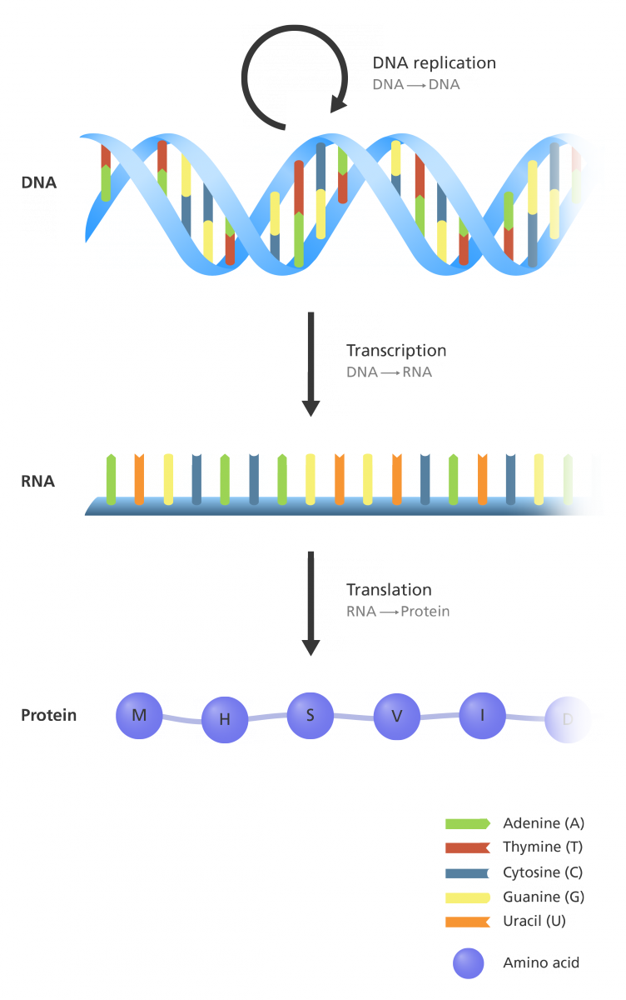
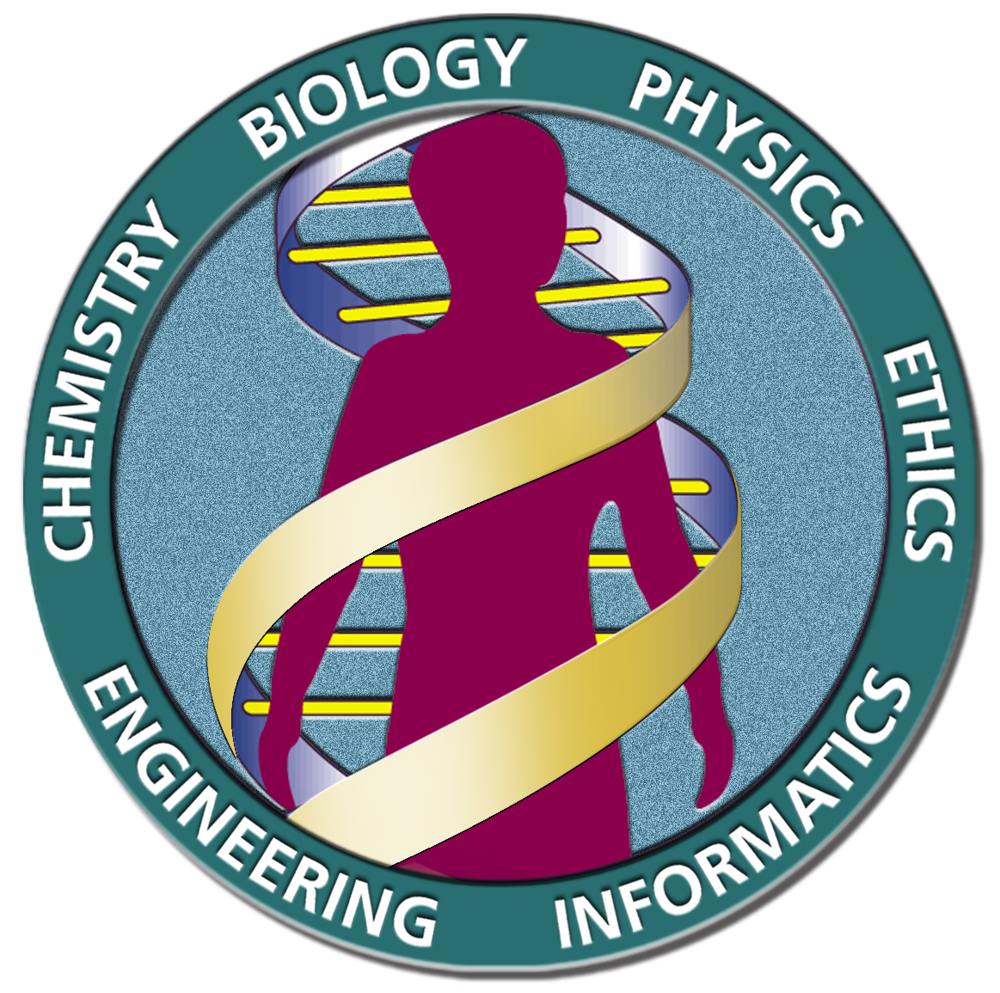
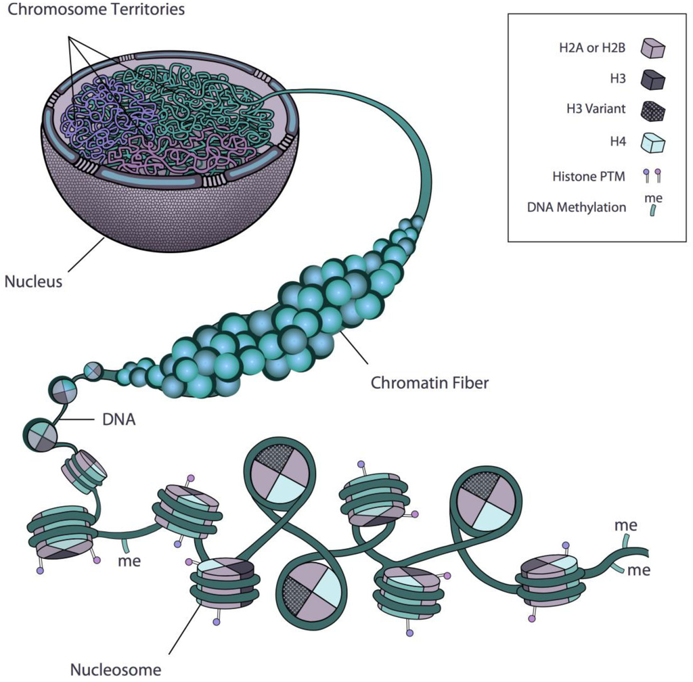

## {{ page.title }}
---
## Course overview
- Course website: https://cphg.github.io/compgen/
- Scribing assignments
- Programming assignments: GitHub classroom
- Final presentations
---
## git and GitHub in 5 slides
---
### git/GitHub serve multiple purposes
1. Backup
2. Version control
3. Distributing/sharing code
4. Testing
5. Communication
---
### Basics of git repos
1. A git repository is a folder with a `.git` subfolder
2. The `.git` subfolder stores an index of snapshots
3. Commits track the repository, not individual files.
4. Git uses a model of distributed *clones*
---
Centralized (svn)
Distributed (git)
ProGit
---
### Basics of git branching
1. Branches are pointers to commits. They are cheap.
2. Combine branches with either *merge* or *rebase*.
3. Branching workflows can be opinionated (*e.g*, gitflow, threeflow, trunk development)
---
$ git checkout -b hotfix
Switched to a new branch 'hotfix'
$ vim index.html
$ git commit -a -m 'Fix broken email address'
[hotfix 1fb7853] Fix broken email address
1 file changed, 2 insertions(+)
ProGit
---
## Introduction to computational genomics
This intro will cover:
1. Definitions of genomics and related fields
2. Brief history of genomics
3. Core biological concepts and technology
4. Overview of sequencing technologies
5. The genomic data explosion and computation
6. How genomics links to business, ethics, and health
---
### Genomics is the study of genomes What is a genome?
> A complete set of genetic information.
### What is genetic?
> Relating to origin.
### What is genomics?
> The study of the instructions needed to originate an organism.
---
### Early history of genomics
- Discovery of DNA (1871)
- Discovery of nucleotides (1910)
- DNA is the genetic material (1944)
- Discovery of structure of DNA (1953)
- The central dogma (1957)
See https://www.yourgenome.org/facts/timeline-history-of-genomics
---
1944: DNA is genetic
Avery et al. 1944
1957: Central dogma
 Crick 1957
Image credits: Genome Research Limited
---
### Genomics is intertwined with sequencing technology
> DNA sequencing is the process of determining the *sequence* of nucleotides (ACTG) in a strand of DNA
DNA sequencing = measurement (like a microscope)
---
### History of genome sequencing
- Sanger sequencing (1977-1980)
- The [Human Genome Project](https://www.genome.gov/human-genome-project) (1990-2003)
- The [ENCODE project](https://www.genome.gov/Funded-Programs-Projects/ENCODE-Project-ENCyclopedia-Of-DNA-Elements) (2003-2021)
- Sequencing by synthesis (2008-2012)
- Single-molecule sequencing
- 100k genomes sequenced
---
1977: Sanger sequencing
Chain Termination Method
2001: Human genome

Image credits: Wikipedia
---
### 2008: Sequencing by synthesis
---
2009: SMRT
PacBio
2016: Nanopore
Oxford Nanopore
Image credits: Genome Research Limited
---
### Sequencing costs
databio.org/seqcosts
---
### Other types of sequencing
- Bionano: Saphyr system
- Polony sequencing
- Roche 454 "Pyrosequencing"
### Contrasting sequencing platforms
- Size of machine
- Length of reads
- Number of reads
- Cost of machine, cost of reads
- Accuracy of reads
- Technician time
---
### Sequencing
- Sequencing technology doesn't just measure DNA
Genome → transcriptome → epigenome
Convert what you want to measure to DNA, then use DNA sequencing technology.
---
### Transcriptomics
> The study of the RNA molecules produced by a cell.
---
### Epigenomics
> The study of the chemical modification and physical conformation of cellular DNA and bound proteins
---
 Rosa et al. 2013
---
### Units
Genomics
sequence alignment
genome assembly
variant calling
Epigenomics
short-read reference mapping
string models
genomic intervals
Transcriptomics
dimensionality reduction
k-mer algorithms
differential expression
### Focus
Algorithms and methods motivated by biology
---
### Genomics today
- Genomics and health
- Genomics and business
- Genomics and evolution
- Genomics and privacy
- Genomics and ethics
- Genomics and computing
---
### Genomics and health
- Genome-wide association studies (GWAS)
- "Mendelian" traits
- Complex traits
- epimutations, cancer classification
---
### Genomics and privacy
- Crypt4GH
- Gerstein's anonymization
---
### Genomics and law
- BRCA patent
- Anti genetic discrimination laws
---
### Genomics and ethics
- genetically modified babies
---
### Genomics and computing
---
### Conclusion
It's a super interesting time to be studying genomics.
The world is starving for people who can apply advanced computation to growing genomic data.
Looking forward to a fun and enlightening semester.